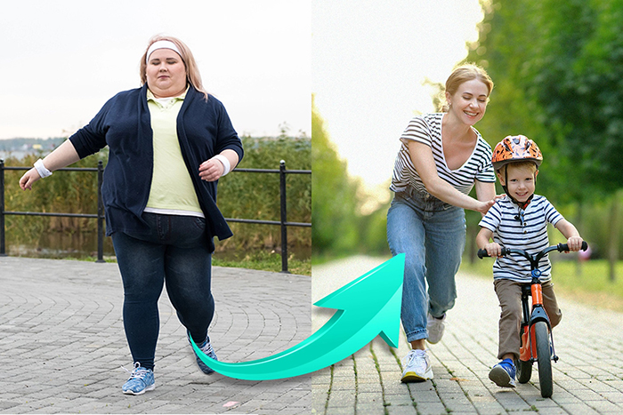
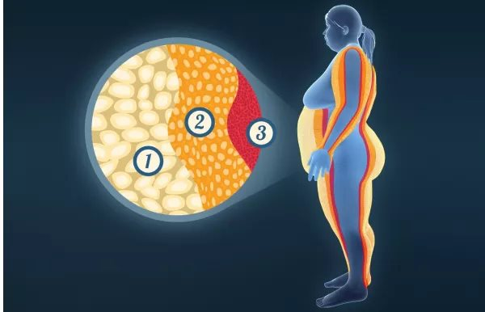
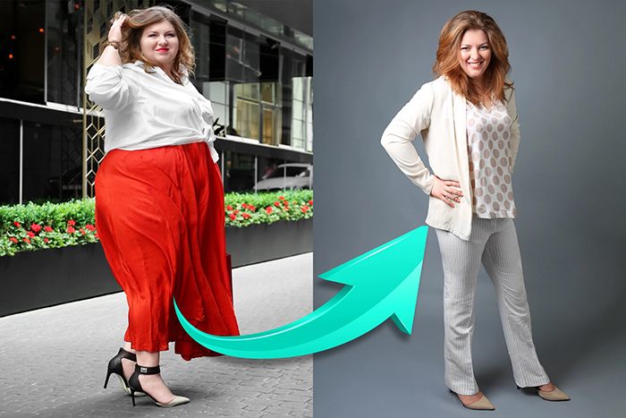
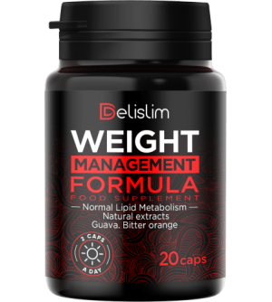

Zrzuć z siebie zbędny ciężar tłuszczu i przedłuż sobie życie!
Efekt automatycznego odchudzania do 10 kg na 2 tygodnie 10 kg na 2 tygodnie
Dzień dobry, nazywamy się Anna Wasilewska (Polska), Diego José Gutiérrez (Argentyna) i Keiichirōi Sanaka (Japonia).
Światowej klasy naukowcy nazywają nas „młodymi bohaterami, którzy wynaleźli antidotum na nadwagę”. Bardzo nam to schlebia. Lecz bardziej niż z pochlebstw cieszymy się, że dzięki nam możesz zrzucić całą zbędną tkankę tłuszczową. A tym samym być zdrowy i szczęśliwy.
Nasze „antidotum na nadwagę” pomaga schudnąć do 10 kg na 2 tygodnie.
Co ważne: utrata wagi zachodzi bez zmieniania diety oraz bez wysiłku fizycznego. Tym sposobem schudniesz do 10, 30, 50 kg i więcej. Tak, jak Pani Jolanta z Pionek, która dzięki naszej metodzie schudła aż 100 kg!
Zyskałam nowe życie
Byłam taka otyła, że nawet z domu nie wychodziłam, bo się wstydziłam. Dzieciaki na podwórku wołały za mną „słonica”. A matki nawet im uwagi nie zwracały, tylko patrzyły na mnie z obrzydzeniem. Bałam się, że umrę samotnie i dzieciom kłopotów narobię, bo będą musiały moje martwe cielsko wyciągać dźwigiem przez okno. Z tą myślą zasypiałam każdej nocy…
A dzisiaj?
Ważę 71 kg. Jestem szczęśliwa, jak jeszcze nigdy w życiu. I co najważniejsze: zdrowa! Już nie siedzę w domu. Spędzam czas z rodziną i ze znajomymi. A najlepszy hit jest taki, że mój były mąż zaczął do mnie dzwonić. Chce do mnie wrócić. Nie wiem, czy warto się zgadzać, bo spotykam się z młodszymi i przystojniejszymi mężczyznami. Po prostu cudownie…
Jolanta Banaś, 55 lat, Pionki
Schudła 102 kg w 5 miesięcy!
❮
❯
Dziś Ty też możesz skutecznie schudnąć 10, 30, 50 kg i więcej, a tym samym zyskać zdrowe i szczęśliwe życie
Nieważne, czy jesteś kobietą, czy mężczyzną. Nieważne, ile masz lat. Nieważne, czy masz nadwagę od dziecka, czy pojawił się od kilku miesięcy. Nieważne, jaki jest jej powód – czy jest nim słabość do słodyczy, siedząca praca, przebyta ciąża, problemy hormonalne, menopauza, przyjmowane leki itd…
Ważne jest tylko to, że chcesz schudnąć. C Tylko to się liczy. I wiedz, że z naszą kuracją dokonasz tego szybko, łatwo i bezpiecznie. Bez względu na wszystko.
• Jeśli teraz ważysz 100 kg...
Za 4 tygodnie będziesz ważyć 80 kg, a za 8 tygodni 60 kg! Możesz tracić do 10 kg w 2 tygodnie. Efekty są potwierdzone doświadczeniem 27 tysięcy kobiet i mężczyzn w wieku 18-98 lat.
• Jeśli boisz się o swoje zdrowie...
...bo masz złe wyniki poziomu cholesterolu i cukru, bolą Cię stawy, nie masz energii i obawiasz się, że nadwaga skróci Ci życie… – już w 2 tygodnie będziesz w stanie poprawić swoje zdrowie.. Zaczniesz tryskać energią. A za 4 tygodnie nic już nie będzie Cię bolało. Przestaniesz bać się o swoje zdrowie i życie, bo dzięki szczupłej i zdrowej sylwetce już nie będziesz mieć ku temu powodów.
• Jeśli uwielbiasz dobre jedzenie i nie potrafisz trzymać się diety...
Wcale nie musisz tego robić! Jest to wręcz niewskazane. Możesz jeść wszystko, na co masz ochotę, bo jedzenie często nie wpływa na efekty odchudzania. Możesz schudnąć, nie rezygnując z ulubionych potraw. Jak? Opowiemy poniżej.
• Jeśli nie lubisz ćwiczyć...
Nie rób tego! Twoje ciało jest teraz obciążone nadmiernymi kilogramami. Podejmij aktywność fizyczną dopiero, gdy nie będzie ona zbytnim obciążeniem dla Twoich stawów i serca. Jeśli masz ochotę uprawiać sport, to zrób to dopiero za 2 lub 4 tygodnie, gdy już będziesz szczupły. Wtedy odczujesz też z tego większą przyjemność.
• Jeśli ludzie śmieją się z Twojej nadwagi...
Niech się śmieją. Nie poświęcaj swojego cennego czasu na przejmowanie się tym. Skoro są na tyle podli, żeby oceniać Cię po wyglądzie, nie są w ogóle warci Twojej uwagi. A Ty już za kilka tygodni
będziesz mieć szczupłe, atrakcyjne, a przede wszystkim zdrowe ciało, którego oni będą Ci zazdrościć!
• Jeśli przez otyłość masz kompleksy...
...bo coraz trudniej znaleźć Ci odpowiednią garderobę albo boisz się, że Twój partner już Cię nie lubi – daj sobie tylko mniej niż miesiąc. Wreszcie możesz nosić ubrania mniejsze o kilka rozmiarów, które będą idealnie na Tobie leżeć. Twój partner przestanie oglądać się za szczuplejszymi i zakocha się w Tobie na nowo. A Ty będziesz czuć się doskonale w Twoim szczupłym ciele i z radością będziesz patrzeć w lustro.
I to wszystko...
BEZ DIETY I ĆWICZEŃ
BEZ MARNOWANIA PIENIĘDZY
BEZ ZMIAN STYLU ŻYCIA

Super figura po ciąży i pomimo miłości do słodyczy!
Dziękuję, dziękuję, dziękuję za tę metodę odchudzania! Koniecznie chciałam schudnąć po ciąży. Wcześniej nie byłam bardzo chuda, a potem... Wiadomo, jak kobieta zachodzi w ciążę to nie odmawia sobie pysznego jedzenia. Nie trzeba się pilnować co, ile i o której godzinie się je. „To wszystko dla dziecka”. Taka dobra wymówka. Po urodzeniu mojego Sebastianka miałam już stanowczo za dużo nadwagi. Nie mogłam jej zrzucić ani głodówką, ani codziennym bieganiem, ani herbatkami spalającymi tłuszcz. Już myślałam, że do końca życia będę się męczyć z wielkim dupskiem i wiszącym brzuchem, aż trafiłam na portalu dla mam na artykuł o tej metodzie odchudzania. Od razu wiedziałam, że będzie mi odpowiadać!
I tak się stało! Bo ani nie pilnowałam, co jem, ani nie ćwiczyłam – a spadło mi z wagi aż 45 kg! Jestem sto razy bardziej energiczna. Tak szybko się w domu ze wszystkim wyrabiam, tak szybko, że mam jeszcze czas przejechać rowerem 10 kilometrów, żeby spotkać się z przyjaciółką, jak mąż z pracy wróci. A jak idę z synem na plac zabaw, to w środku się cieszę! Bo jestem tak chuda jak przed urodzeniem dziecka, w przeciwieństwie do grubych mam na placu zabaw. Może wydawać się, że jestem trochę wredna, ale lubię to cudowne uczucie, jak patrzą na mnie z zazdrością.
Sylwia Dziewulska, 28 lat, Radom
Schudła 45 kg w 8 tygodni!
❮
❯
Jak wynaleźliśmy naszą metodę automatycznego odchudzania?
Naszego przełomowego odkrycia dokonaliśmy podczas stażu w Singapore Science Laboratory , na które zaproszono 10 geniuszy z całego świata. Nieskromnie przyznamy, że jesteśmy właśnie jednymi z owych 10 geniuszy.
Pomogła nam miłość do nauki, nowe spojrzenie na problem nadwagi i wielki upór w działaniu. Pracowaliśmy dzień w dzień w pocie czoła przez 17 miesięcy. Z przemęczenia ryzykowaliśmy własnego zdrowia. Ale to nic, bo dzięki temu dokonaliśmy cudu, którego nauka nie mogła lub nie chciała dokonać przez 45 lat.
Nie mogliśmy dłużej patrzeć, jak ludzie cierpią przez nadwagę
Dlaczego postanowiliśmy wynaleźć antidotum na nadwagę? Żeby przerwać to domino śmierci! Ludzie tyją na potęgę w zastraszającym tempie, a przez nadwagę ciężko chorują. I wcale nie jest to ich wina…
To wina zanieczyszczonego środowiska, w którym żyjemy. Wina wysoko przetworzonej żywności. Wina problemów hormonalnych. Wina stresu. Wina życia w biegu. Wina siedzącej pracy. To następstwo przebytej ciąży lub menopauzy. Czynników jest całe mnóstwo, ale nie to jest teraz ważne. Ważne i okrutnie smutne jest to, jak otyli ludzie są traktowani przez innych…
Pierwszy raz w życiu jestem szczupły
Miałem dwanaście lat, kiedy zacząłem dużo przybierać na wadze. Zawsze miałem apetyt, ku wielkiej radości mojej babci, która mnie wychowała i karmiła tłustymi potrawami. Dopiero w domu uważali mnie za przystojnego, w szkole nazywali grubasem. Przez całe życie dokuczano mi z powodu mojej wagi. I nie miałem szansy tego naprawić. Wystarczyło mi pobiec do autobusu i byłem już zlany potem, serce wściekle się biło. Ludzie nie rozumieli, jak cierpię i się śmiali ze mnie. Jednym słowem życie było nie do zniesienia.
Chwała Bogu, że kolega mi polecił ten środek (jego ojciec zastosował i bardzo chwalił). Spróbowałem i chudłem dosłownie w oczach. Do tej pory jak budzę się rano, to nie wierzę, że ten szczupły facet w lustrze, to ja. Nareszcie się zrobiłem bardziej śmiały do dziewczyn. Spotykam się od 2 miesięcy z taką Kasią. Mam nadzieję, że wyjdzie z tego coś poważnego. No i najważniejsze: jak odwiedzam babcię, to nie sprawiam jej przykrości i nie odmawiam jedzenia. Bo wiem, że dzięki temu środkowi nie przytyję!
Adrian Daszyński, 35 lat, Lublin
Schudł 61 kg w 3 miesiące!
❮
❯
Nie pozwolimy, by ludzie z nadwagą nazywani byli leniwymi obżartuchami
Babcia Ani przez otyłość dostała cukrzycy i przedwcześnie odeszła z tego świata...
–Czy moja babcia była leniwa? Ona jadła za dużo? Czy była nieatrakcyjna? Absolutnie NIE! Była piękną kobietą, bo miała dobre i kochające serce. Nigdy się nie leniła. Albo pracowała w ogródku, albo przygotowywała jedzenie dla całej rodziny, albo opiekowała się niepełnosprawnymi dziećmi na cele charytatywne. Była więc bardzo aktywna fizycznie! I nigdy się nie przejadała – mówi Ania – nawet się odchudzała i jadła tylko 3 jabłuszka dziennie! Nic to nie dało…
Tata Diega zmarł w wyniku zawału serca spowodowanego otyłością...
– Ojciec pracował fizycznie w fabryce. Cały czas dźwigał ciężary. Każdy jego dzień pracy był jak intensywny trening na siłowni. Mimo to przybrał 30 kg nadwagi.Chodził nawet do specjalistów z odżywiania, ale nic mu nie pomogli. Oddałbym wiele, żeby wynaleźć to antidotum na nadwagę wcześniej. Tata byłby dziś z nami – wyznaje Diego ze smutkiem.
U Keiichirō otyłość jest dziedziczna...
– Cała moja rodzina od lat chodziła do specjalistów od odżywiania,ekspertów w dziedzinie endokrynologii, trenerów. I od lat nic to nie dawało, nic kompletnie. I co z tego, że
mama ZAWSZE gotowała dietetycznie: ryż, warzywa na parze i chude mięso? I tak każdy tył, jakby codziennie pochłaniał 10 hamburgerów z frytkami! Dlatego postanowiłem się uczyć i zrobić coś z tym sam, żeby ocalić życie moich bliskich – mówi Keiichirō.
Jesteś wspaniały i zasługujesz na szacunek bez względu na wagę
Tak to na świecie jest, że ludzie z widoczną nadwagą są wyszydzani. My się na to nie godzimy! Zazwyczaj jest nawet tak, że ludzie z nadwagą są lepsi od chudych ludzi. Bo wiedzą, jak to jest być wyrzutkiem albo być wyśmiewanym. Dlatego mają w sobie więcej ciepła i wyrozumiałości. Są wspaniałymi przyjaciółmi.
90, 120, 150, 180 kg? Te durne liczby na wadze to nie jesteś Ty! Prawdziwy Ty siedzi tam w środku, tylko jest schowany pod warstwą zabójczego tłuszczu…
I musisz się od tej tłustej warstwy uwolnić wcale nie po to, żeby przypodobać się innym, ale po to, żeby uratować swoje zdrowie, a może nawet życie. Faktem jest, że nadwaga skraca życie średnio o 12 lat. . Ale wszystko nie powinno skończyć się tak smutno.Tak NIE MOŻE być!
Świetne zdrowie na starość!
Wraz z mężem mieliśmy grubo ponad 30 kg nadwagi i słabe zdrowie przez to. Na starość to coraz ciężej nadmiar ciała dźwigać. Mi padło na stawy (kolanowy i biodrowy) i miałam za duży cukier, a Zdzisiek dostał miażdżycy. Codziennie marudził, że dostanie zawału. Specjalista kazał nam schudnąć, tylko to może nam pomóc. TrocPróbowaliśmy ograniczać się w odżywianiu, ale niewiele to pomogło. Wnusia nasza Moniczka, jak to usłyszała, to od razu zaczęła szperać w Internecie, żeby nam coś znaleźć na schudnięcie i znalazła ten sposób.
Co to były za cuda! I na mnie i na Zdzicha tak samo zadziałało. Kilogram za kilogramem chudliśmy tak szybko i łatwo, że nie mogliśmy uwierzyć. Ciuchy musiałam wszystkie na maszynie przerabiać na mniejsze! Ale to dobrze, bo teraz jesteśmy szczupli i pełni animuszu, jak w młodości. Specjalista nie mógł wyjść z podziwu i szczerze powiedział, że jest dumny z takich pacjentów.
Halina i Zdzisław Markowscy, 72 i 75 lat, Wrocław
Schudli 21 i 26 kg w 5 tygodni!
❮
❯
Śmiali się z nas, kiedy zaczynaliśmy swoją pracę…
Inni „młodzi geniusze” zaproszeni do Singapore Science Lab postanowili pracować nad rozwiązaniami problemów cukrzycy, miażdżycy czy zwyrodnień stawów i kręgosłupa. Gdy to usłyszeliśmy, ze złości zaciskaliśmy zęby.
Przecież wszystkie te dolegliwości są spowodowane nadwagą! Przecież to proste i logiczne, że należy zwalczać przyczyny, a nie skutki! ALudzie powinni cieszyć się zdrowiem dzięki prawidłowej wadze, a nie faszerować się chemią przez spowodowane nadwagą dolegliwości.
Postanowiliśmy zrobić wszystko, żeby wynaleźć antidotum na nadwagę. Pracowaliśmy w pocie czoła dzień w dzień. Dostaliśmy niejedną naganę za przesiadywanie w laboratorium w nocy – kiedy teoretycznie nikt tam nie ma wstępu. Nasze badania jednak szły w tak dobrym kierunku, że z podekscytowania nie mogliśmy w nocy spać. Musieliśmy pracować dalej!
17 miesięcy naszych badań zrewolucjonizowało podejście do odchudzania i problemu nadwagi. Odkryliśmy szereg zależności w funkcjonowaniu ludzkiego metabolizmu, na jakie nie wpadli wcześniej żadni naukowcy. Gdy zaczynaliśmy badania, wyszliśmy z założenia, że…
Nawet człowiek ważący 200 kg jest szczupły w środku
Jeżeli zrobisz prześwietlenie swojego ciała, to na medycznym ekranie zobaczysz normalną, szczupłą sylwetkę. O tym, że masz ją już w sobie, łatwo możesz się przekonać, naciskając mocniej na swój brzuch, ręce czy nogi. Ten sprężysty opór, który poczujesz, to zbędna tkanka tłuszczowa.
Na szczupłym ciele nosisz ciężki i niepotrzebny płaszcz z tłuszczu. W zależności od skali nadwagi, ma on od kilku do kilkudziesięciu centymetrów grubości. Waży od kilku do kilkudziesięciu kilogramów. Dobra wiadomość jest taka, że w środku masz atrakcyjne ciało o idealnej figurze. Jest ono tylko ukryte pod płaszczem tłuszczowym. Jedyne, co trzeba zrobić, to zdjąć ten płaszcz. My wiemy, jak!
Tłuszcz tłuszczowi nierówny
Warstwa tłuszczu jest bardzo niejednorodna. Przyjrzyjmy się jej z bliska. Na tym zdjęciu widać, że płaszcz tłuszczowy składa się z 3 warstw.

1.
Tłuszcz podskórny
To warstwa zewnętrzna, tuż pod skórą, której 57% stanowi woda. To właśnie tu powstaje cellulit i luźna, galaretowata skóra.
2.
Tłuszcz podpowięziowy
To warstwa środkowa, podobna do masła lub smalcu. Ona zawsze waży najwięcej i w niej magazynowane są toksyny będące przyczyną stresu, zmęczenia i problemów skórnych.
3.
Tłuszcz trzewny — i właśnie to jest Twój prawdziwy wróg, którego musisz pokonać!
To warstwa wewnętrzna. Jest to najcieńsza, ale najbardziej sprężysta warstwa, jak twarda podeszwa buta. Bardzo trudno jej się pozbyć. Właśnie przez nią powstaje efekt jo-jo. Jak to się dzieje? Nawet jeśli uda nam się schudnąć, skamielina „pragnie” okrywać się kolejnymi warstwami tłuszczu i szybko to robi.
W toku naszych badań z udziałem 9 tysięcy otyłych osób, jasno wykazaliśmy, że dotychczas znane metody zrzucenia wagi działają tylko na drugą warstwę płaszcza tłuszczowego, czyli na maź tłuszczową. Takie podejście jest skazane na niepowodzenie.
Prawdziwa przyczyna efektu jo-jo
Odchudzając się dietą i ćwiczeniami, spalasz kilka kilogramów lepkiego tłuszczu podpowięziowego, natomiast trzewny skamieniały tłuszcz zostaje nienaruszona. Gdy tylko skończysz tracić na wadze, trzewny tłuszcz sam się zemści! Stymuluje wzrost ilości tłuszczu podpowięziowego. Stąd efekt jo-jo, który niweczy cały wysiłek i sprawia, że tyjesz jeszcze szybciej, niż trwało odchudzanie.
Pokonałam kompleksy i odnalazłam miłość
Odchudzałam się w życiu dokładnie 17 razy. Próbowałam głodówki – zero efektu. Dieta kapuściana, dieta dukana, dieta oczyszczająca, dieta ketogeniczna. Wszystkiego próbowałam – zero efektu. Byłam zrozpaczona, bo przez moje kompleksy rujnowałam wszystkie moje związki. Byłam zazdrosna o partnerów, marudziłam na swój wygląd... W życiu bym nie pomyślała, że po tylu latach męki, schudnę. No to był szok!
Kupowanie ubrań już nie jest moim utrapieniem, bo wszędzie mają mój rozmiar S lub M!!! Nie wstydzę się, jak ludzie się na mnie patrzą na wakacjach. Zmiana o 180 stopni, naprawdę. I czuję się 100% kobietą, pełnowartościową i zasługującą na uwagę faceta. Nie mam obaw, że zostanę zdradzona z jakąś szczupłą laską. Bo to ja jestem szczupłą laską!
A mój obecny mężczyzna właśnie niedawno mi się oświadczył. Kocham swoje życie!
Hanna Muszyńska, 41 lat, Otwock
Schudła 38 kg w 7 tygodni!
❮
❯
Rozbij skamielinę tłuszczową jednym silnym uderzeniem i już NIGDY nie martw się nadwagą
Twardy tłuszcz trzewny – to jest Twój prawdziwy wróg. Jeśli się go nie pozbędziesz, to nigdy nie pozbędziesz się nadwagi. Dzięki naszej metodzie możesz pozbyć się tego typu tłuszczu. To my dowiedliśmy jej istnienia, zbadaliśmy ją i wynaleźliśmy sposób, by się jej pozbyć. Jak to działa?
1.
Szybkie i automatyczne spalanie tkanki tłuszczowej
Dzięki rozbiciu twardej warstwy tłuszczu, maź tłuszczowa dosłownie „traci grunt”. Nie ma czego się przyczepić, zatem ulega spalaniu. W efekcie bardzo szybko zanika również poziom tłuszczu podskórnego – pozbywasz się cellulitu już po 7 dniach stosowania kuracji.
2.
Oczyszczenie organizmu z toksyn
W momencie uruchomienia mechanizmu, dzięki któremu organizm ma wystarczającą siłę do rozbicia tłuszczu, organizm zostaje oczyszczony z nagromadzonych w nim toksyn. Dzięki temu lepiej śpisz, masz więcej siły i optymizmu. Twoja skóra, włosy i paznokcie zregenerują się i staną się zdrowsze.
Będziesz wyglądać zdrowo i atrakcyjnie.
3.
Ochrona przed efektem jo-jo
I najważniejsze: rozpad tłuszczu trzewnego chroni przed efektem jo-jo. A to oznacza, że gdy już schudniesz, nigdy więcej nie przytyjesz. Badania wyraźnie wykazały, że w wyniku rozpadu tłuszczu wewnętrznego organizm ponownie uruchamia pamięć na poziomie komórkowym.. Po prostu zapomina, jak się odkłada warstwy tłuszczu na brzuchu, udach, pośladkach i całym ciele. A Twój metabolizm zwiększa obroty, dzięki czemu możesz jeść co chcesz, ale nie przytyjesz. Genialne, prawda?
PRZED
PO
Ciało obrośnięte tłuszczem, zatrute toksynami, pozbawione energii.
Ciało szczupłe, wolne od toksyn, pełne energii i zdrowe.
Twoje ciało jest już wysportowane
Masz dość codziennych udręki, jakbyś pracował w sklepie na trzy zmiany. Jesteś zmuszony codziennie nosić te dodatkowe kilogramy. To tak, jakby wziąć 2 paczki wody i nosić je przez cały dzień. I nie możesz ich nawet położyć na ziemi. Żaden sportowiec nie może nosić tyle, ile ludzie z nadwagą noszą na co dzień. Przez lata!
Nasz środek działa wyłącznie na tłuszcz. A konkretnie – spala tylko tłuszcz, bez palenia mięśni. To bardzo ważne. W ten sposób po prostu odsłaniasz swoje już wysportowane ciało. Zyskujesz nie tylko atrakcyjną figurę, ale także rzeźbę mięśni, sprawność i siłę.
Pocenie się na siłowni nie jest Ci potrzebne. Zdrowe ciało masz już w sobie. Wystarczy zdjąć płaszcz z tłuszczu. Nasza metoda pozwala zdjąć płaszcz z tłuszczu tak łatwo i szybko,jak zdejmuje się szlafrok.

Szybko i zdrowo!
To całe odchudzanie to było jak pstryknięcie palcami! Zaczęłam stosować ten środek pierwszego dnia urlopu. Jak po 2 tygodniach wróciłam do pracy do biura, to wszystkim szczęka opadła z wrażenia. Szef nawet wziął mnie na rozmowę i poważnie zatroskany zapytał, czy nie jestem chora na jakąś poważną chorobę, że tak szybko schudłam. Odetchnął z nieskrywaną ulgą, jak opowiedziałam o tym produkcie i o tym, jak cudownie się czuję! Pogratulował mi i poprosił o tabletki dla jego córki, która tyje przez przyjmowanie sterydów. Córce szefa też pomogły (schudła do prawidłowej wagi), a ja mam teraz u niego dodatkowe chody!
Eliza Jóźwik, 37 lat, Warszawa
Schudła 22 kg w 4 tygodnie!
❮
❯
Rośliny, które rozbijają skamielinę tłuszczową jednym ciosem
Prawdziwe antidotum na nadwagę przez setki lat było dostępne na wyciągnięcie ręki, w roślinach. Rośliny te rosły sobie spokojnie na Ziemi i tylko czekały, aż ktoś wreszcie je dostrzeże. Wystarczyło tylko połączyć je ze sobą i pozwolić im działać. Wystarczyło tylko jednego wysiłku, aby pozbyć się nadwagi…
Rozpoczynając nasze prace wybraliśmy ponad 100 roślin i dokładnie je przebadaliśmy.W toku badań wyłoniliśmy kilkanaście najskuteczniejszych ekstraktów. Każdy z osobna dawał efekty podobne do ćwiczeń i diety. To było za mało.
Działanie takich pojedynczych ekstraktów można by porównać do pracy górnika, któremu ktoś kazał wykopać samodzielnie tunel w wielkiej górze. Odniósłby sukces, ale zajęłoby mu to całe życie. By przebić się przez górę, potrzebne jest ogromne wiertło, które poradzi sobie z zadaniem w kilka dni.
Nasz środek to takie ogromne wiertło, które szybko pozbywa się zbędnych kilogramów.
Skuteczność tkwi w połączeniu ekstraktów z unikalnych roślin z różnych kontynentów. Składniki działają z połączoną 100 razy większą siłą. W przypaku tłuszczu twardego takie połączenie jest zaskoczeniem. Nawet się nie broni, po prostu ustępuje i uwalnia ciało od nadwagi!
Działanie u źródła problemu
Kolejną ważną decyzją była forma naszego środka na otyłość. Ćwiczenia, dieta, balsamy spalające tłuszcz czy plastry transdermalne – to wszystko wpływa tylko na podpowięziową i podskórną tkankę tłuszczową . Czyli ten, który może szybko znikać, ale jeszcze szybciej wraca i to ze zdwojoną siłą.
Dlatego zdecydowaliśmy się na naturalne tabletki, które będą działać na źródło problemu. Pomagają z dużą skutecznością rozkładać trzewny tłuszcz, rozprowadzając swoje działanie po całym ciele.
„Historyczny przełom w nauce”
Tak naszą nową metodę odchudzania nazywają światowej sławy naukowcy. Dlaczego?
Odchudza do 10 kg na 2 tygodnie — kiedy korzystasz z naszej metody, możesz schudnąć 12 razy szybciej niż przy stosowaniu drakońskiej diety połączonej z codziennymi treningami.
Jest naturalna i bezpieczna —zawiera wyłącznie naturalne składniki, które są bezlitosne do tłuszczu trzewnego, ale są łagodne do układu pokarmowego. Nie kolidują z innymi przyjmowanymi środkami i nie powodują alergii.
Nie wymaga zmieniania diety — jest to wręcz zabronione! Dieta spowalnia metabolizm, co podczas odchudzania nie jest wskazane. Nasz środek działa sprytniej, pomagając niszczyć wroga Twojej szczupłej sylwetki – tłuszcz trzewny.
Nie wymaga wysiłku fizycznego — podczas kuracji można ćwiczyć, ale nie trzeba. Odchudzanie zachodzi niezależnie od aktywności fizycznej. Możesz spędzać czas na kanapie przed TV, a i tak osiągniesz gwarantowane efekty.
Nie trzeba za nią dużo płacić — tysiące złotych, które wydasz na specjalistę od odżywiania, siłownię, herbatki i suplementy odchudzające – zostają w Twojej kieszeni.
A przede wszystkim: opiera się na najnowszych odkryciach naukowych
, które cieszą się uznaniem najlepszych naukowców na całym świecie.
Skuteczność zawsze i w każdych warunkach
Oto wykresy pokazujące, jakie uzyskaliśmy wyniki, a także wyniki z wielu ośrodków badawczych w Japonii, USA, Kanadzie, Korei Południowej i Argentynie. Prezentowane wyniki obejmują łącznie 27 tysięcy kobiet i mężczyzn w wieku 18-98 lat.
Średnia utrata wagi w 2 tygodnie ze względu na wiek:
10,8 kg
18-29 lat
10,1 kg
30-39 lat
10,5 kg
40-49 lat
10,5 kg
50-59 lat
10,9 kg
60-69 lat
10,8 kg
70-98 lat
Wyniki dowodzą jednoznacznie, że efekt występuje bez względu na wiek,z czego najlepsze efekty odnoszą osoby w wieku 40-59 lat.
Średnia utrata wagi w 2 tygodnie ze względu na wykonywany zawód:
10,1 kg
Praca siedząca
(biuro, urząd)
10,4 kg
Praca stojąca
(sklep, restauracja)
10,7 kg
Praca fizyczna
(budowa, kurier)
Wyniki dowodzą jednoznacznie, że efekt występuje bez względu na stopień aktywności fizycznej związany z wykonywanym zawodem.
Średnia utrata wagi w 2 tygodnie ze względu na płeć:
10,8 kg
Kobiety
w wieku od 18 do 98 lat
10,2 kg
Mężczyźni
w wieku od 18 do 98 lat
Wyniki dowodzą jednoznacznie, że efekt występuje bez względu na płeć.Kobiety chudną nieznacznie szybciej niż mężczyźni.
Jem, co chcę, a brzucha nie ma!
Ja już wiele razy się przejechałem na różnych reklamach i poleceniach od znajomych. Dlatego w tym przypadku też byłem stanowczo na NIE. Ale córki mi spokoju nie dawały i kazały mi brać te tabletki, skoro nie chcę się odżywiać sałatkami. To zacząłem to brać dla świętego spokoju. Skład jest naturalny więc stwierdziłem, że mi nie zaszkodzi, i cena przystępna. I na szczęście to ja się przekonałem, że tym razem wyjątkowo nie miałem racji. Brzuch mi spadł w tydzień dosłownie. Przyznam też, że dużo lepiej się czuję. Z wnukami nawet piłkę kopię bez zadyszki. Ale odżywiam się po swojemu. Bardzo fajnie.
Maurycy Potocki, 66 lat, Gdańsk
Schudł 17 kg w 3,5 tygodnia!
❮
❯
Zobacz, jakie to proste
Nie musisz jeść miesiącami wyłącznie jabłek, marchewek i sałaty. Nie musisz męczyć się na siłowni. Nie musisz nawet wychodzić z domu. Możesz jeść, co chcesz. Nie musisz dużo się ruszać. Możesz nie zmieniasz niczego w swoim codziennym życiu. Sposób, by zacząć chudnąć do 10 kg na 2 tygodnie jest banalnie prosty. Jak przebiega kuracja odchudzająca?
Należy przyjmować 1 kapsułkę 2 razy dziennie 30 minut przed posiłkiem. To wszystko. Pierwszą przed śniadaniem i drugą przed obiadem. I to wszystko. Niczym się nie martwisz. Żyjesz sobie jak dotychczas, a Twoje ciało zamienia się w maszynę do spalania kalorii. Rozbija twardą warstwę tłuszczu, by wreszcie odsłonić szczupłą i atrakcyjną sylwetkę, którą masz w sobie!
Zobacz, jakie to bezpieczne
Nie grozi Ci niedożywienie ani osłabienie – jak w przypadku diety. Nie grozi Ci kontuzja stawów ani zaburzenia rytmu serca – jak w przypadku treningów. Nie zaznasz żadnych skutków ubocznych. Dlaczego?
Środek jest w 100% naturalny. Jego stosowanie nie koliduje z żadnymi przyjmowanymi środkami, nie podrażnia układu trawiennego ani nie powoduje alergii. Wszystko dzięki formie naturalnych tabletek. Ich skład został opracowany tak, by być dla organizmu zupełnie nieinwazyjny. Zupełnie tak, jak nieinwazyjna dla organizmu jest woda.
Jedni nazywają nas bohaterami, a inni… „frajerami”
Tak, frajerami… A to tylko dlatego, że odchudziliśmy już 27 tysięcy osób,nie zarabiając pieniędzy na naszym odkryciu. Wspólnie stwierdziliśmy, że w momencie, gdy plaga otyłości pochłania miliony istnień ludzkich – nie będziemy pobierać wynagrodzenia ze sprzedaży naszego środka automatycznie odchudzającej. Postanowiliśmy udostępnić ją ludziom bez zarabiania na tym. Przez pół roku skorzystało już 27 tysięcy ludzi, z czego jesteśmy ogromnie szczęśliwi.
Ale 20.04.2022 musimy sprzedać patent na środek, by zapewnić sobie środki finansowe na dalsze badania naukowe. Planujemy wynaleźć inne kuracje na jeszcze wiele innych schorzeń i dolegliwości, między innymi degradację stawów i kręgosłupa oraz demencję starczą. Jednak takie badania są bardzo, bardzo drogie – i musimy uzbierać na nie środki.
Niestety, sprzedanie patentu spowoduje, że kuracja będzie przynajmniej 10-krotnie droższa niż obecnie. Właśnie dlatego zależy nam, aby każdy potrzebujący zaopatrzył się w swoją kurację jeszcze przed sprzedażą patentu.
Dlatego serdecznie Cię zachęcamy do działania TERAZ!
Nic nie ryzykujesz!
Nasz środek, który można zażyć w domu, nazywa się . Decydując się na nią, nic nie ryzykujesz. To dlatego, że chroni Cię gwarancja potrójnej satysfakcji, na którą składają się: gwarancja oryginalności, gwarancja jakości i gwarancja skuteczności.
Produkt oryginalny z certyfikatem –masz pewność, że trafi do Ciebie oryginalny produkt, dostępny jedynie za pośrednictwem tej strony.
Jakość potwierdzona badaniami – ze względu na zaawansowany sposób produkcji, produkt spełnia najwyższe standardy jakościowe. Wszystkie składniki mają potwierdzone 100% bezpieczeństwo dla zdrowia.
Skuteczność potwierdzona przez 27 tysięcy użytkowników – liczne badania i konsumenckie również potwierdzają najwyższą skuteczność kuracji.
Życie jest zbyt pięknie, żeby skracać je sobie przez nadwagę albo zadręczać się kompleksami...
Nie musisz cierpieć ani chwili dłużej. Pokonaj tłuszcz i chroń swoje zdrowie.Nic nie ryzykujesz. Nie masz absolutnie nic do stracenia. Jedyne, co możesz stracić, to 20 kg, 50 kg, a nawet 100 kg nadwagi. Zyskujesz natomiast atrakcyjną figurę, mnóstwo pozytywnej energii i świetną kondycję zdrowotną.
Stoisz teraz przed 1 prostym wyborem:
1.
Nie podejmować działania...
Nadal cierpieć przez płaszcz tłuszczowy obrastający Twoje ciało, zadręczać się kompleksami i narażać swoje zdrowie na szwank…
2.
Wykorzystać szansę, którą dostajesz TERAZ!
Spal znienawidzoną tkankę tłuszczową i zrzuć z siebie płaszcz tłuszczowy. To proste! Wystarczy, że wypełnisz poniższy formularz w 2 minuty i… już za kilka dni zaczniesz chudnąć.
Spełnij swoje marzenie o szczupłym i zdrowym ciele!
Uprzejmie dziękujemy za przeczytanie naszej wiadomości. Jeśli skorzystasz z naszej kuracji, za kilka tygodni, już jako szczupła i zdrowa osoba, wspomnisz ten dzień z uśmiechem i pomyślisz: „To był dzień, który zmienił moje życie…” .
Życzymy Ci dużo zdrowia i szczęścia!
Ania, Diego i Keiichirō
Odbierz kurację automatycznie odchudzającą za udział w klubie rabatowym taniej!

Ilość pozostałych sztuk z dofinansowaniem:060
Dzięki kuracji mam ochotę tańczyć z radości! Nigdy nie czułam się tak dobrze, nawet za młodu. Jestem ogromnie wdzięczna.
Aniela,
Białystok
Przez mój problem czułem się jak zero. Nieskuteczne terapie ciągnęły się latami. Aż pewnego dnia żona sprawiła mi . Powiem krótko: nigdy nie czułem się lepiej!
Andrzej,
Katowice
Gdybym wiedziała, że to takie proste, już dawno bym skorzystała. Cyk – i po problemie! Polecam wszystkim, którzy już dawno stracili nadzieję, że coś im pomoże.
Marianna,
Zgorzelec
Tę kurację po prostu trzeba mieć! Wcześniej męczyłem się z jakimiś chemicznymi dziadostwami, a nie dość, że jest zupełnie bezpieczny dla zdrowia, to jeszcze działa lepiej, niż one wszystkie razem wzięte.
Sławomir,
Lubiąż
dostałam w prezencie od babci i na początku nie wierzyłam, że może być aż tak skuteczny. Ale co mi szkodziło spróbować? I po 28 dniach trzeba było widzieć moją minę, jak problem zniknął jak ręką odjął. Bardzo fajna sprawa.
Marzena,
Wrocław
Dzięki kuracji mam ochotę tańczyć z radości! Nigdy nie czułam się tak dobrze, nawet za młodu. Jestem ogromnie wdzięczna.
Aniela,
Białystok
Jak dla mnie – to odkrycie zasługuje na Nobla. W 28 dni pozbyłem się całkowicie problemu, jak wcześniej 5 lat się męczyłem i nic. Super sprawa!
Marek,
Krosno
Skuteczność + szybkość + bezpieczeństwo. Takie połączenia lubię! Super rozwiązanie, jak ktoś szuka sprawdzonej i super skutecznej metody.